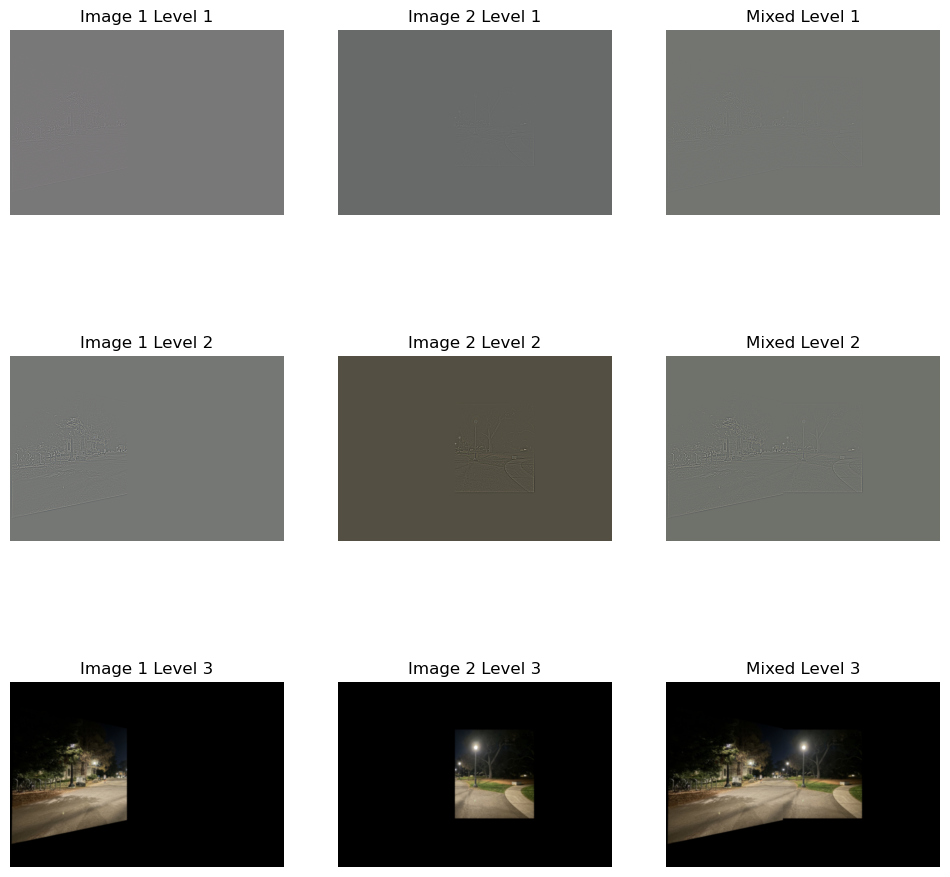

This project is split into two parts: Part A consists of manually annotating correspondences of images to mosaic them together, whereas Part B takes this one step further by automating feature matching to stitch together images automatically!
In order for this to work on a set of images, they must be taken with the same center of projection (COP). Otherwise, the projective transformation wouldn’t work because varying perspectives make alignment inaccurate and distort the final image. To achieve this, I made sure to hold my phone steady along the camera’s axis, rotating it slightly while keeping the camera stable.
In a projective transformation, we have 8 degrees of freedom, which means we can map one plane to another uniquely by adjusting 8 parameters (a, b, c, d, e, f, g, and h in the homography matrix). Our goal is to transform points from one image \((x_1, y_1)\) to corresponding points in another image \((x_2, y_2)\).
A projective transformation can be represented by a 3 x 3 matrix \( H \):
\[ H = \begin{bmatrix} a & b & c \\ d & e & f \\ g & h & 1 \end{bmatrix} \]
This matrix \( H \) allows us to map points from one image to another. If we take a point \((x, y)\) in the first image, we can calculate its corresponding location \((x_2, y_2)\) in the second image using homogeneous coordinates. The transformed point \((x_2, y_2)\) satisfies:
\[ w \cdot x_2 = a \cdot x + b \cdot y + c \quad \text{and} \quad w \cdot y_2 = d \cdot x + e \cdot y + f \] \[ w = g \cdot x + h \cdot y + 1 \]
Rearranging these equations, we can express this transformation in matrix form:
\[ \begin{bmatrix} x & y & 1 & 0 & 0 & 0 & -x1 \cdot x_2 & -y \cdot x_2 \\ 0 & 0 & 0 & x & y & 1 & -x1 \cdot y_2 & -y \cdot y_2 \end{bmatrix} \begin{bmatrix} a \\ b \\ c \\ d \\ e \\ f \\ g \\ h \end{bmatrix} = \begin{bmatrix} x_2 \\ y_2 \end{bmatrix} \]
This matrix system lets us solve for the parameters \(a, b, c, d, e, f, g, h\) by using known point correspondences \((x, y)\) and \((x_2, y_2)\) from two images.
Since we only need 8 degrees of freedom, we technically only need 4 points to solve for our homography matrix. However, to improve accuracy and decrease the effect of noise we can select more points (7-10) and solve the overconstrained system using least squares. This approach finds the optimal homography matrix to map from one image to another. Note: I took these correspondences using the tool provided from Project 3
Once we have a homography matrix between images, warping involves using the inverse of this matrix. If we were to use a forward warp, some pixels could land between grid points and it is not ideal to deal with these “holes” since there are no defined intensities there. Inverse warping avoids this by interpolating from surrounding pixels, which I implemented using nearest-neighbor interpolation through simple rounding.
To check the accuracy of the homography, I used image rectification. By selecting clearly defined rectangular objects, such as a textbook or poster, I could map their corners and ensure they were transformed into a clean rectangle. Here are examples of these rectifications:


Although the warping worked, creating a seamless mosaic required precise image alignment. The idea was to position image 2 on a canvas, warp image 1 to it, and overlay the result. However, alignment issues arose due to shifts introduced during warping. I calculated offsets to track these shifts relative to the original image corners. Here’s an example of naive mosaicing with just placing the images on top of each other:


Let's get rid of this seam. To blend images and reduce visible seams, I experimented with alpha blending, distance transforms, and masks. For my images, the most effective method was identifying overlapping regions and masking along the vertical seam at the midpoint. Importing my multi-resolution blending code from Project 2, I created a two-level Laplacian stack. Here is the mask used, the blending (for this one I used 3-levels) and the images blended:

Here are more mosaics:


Marking correspondences by hand is time-consuming, so in Part B, the goal was to automate this process by detecting and matching features between images. Automated matching may even be more accurate than manual annotation, especially for complex images.
For corner detection, I used the Harris corner detector algorithm we were given, which analyzes the gradient of image intensity to identify regions with significant variations in multiple directions. This method calculates the Harris response for each pixel based on the eigenvalues of the second-moment matrix derived from the image gradients. The resulting corner response function highlights areas of the image that exhibit strong corners. Here is it on the painting images:

There are so many points--we need to select the best ones. After detecting corner features in an image, the challenge lies in selecting the most robust points to avoid redundancy and ensure optimal feature matching. To achieve this, I implemented Adaptive Non-Maximal Suppression (ANMS) based on the MOPS paper. This technique identifies high-quality corner points while maintaining an even spatial distribution by prioritizing features that are not too close to stronger corners.
In my implementation, I sort corner points by their Harris response value, and for each point, I calculate the minimum distance to any stronger corner detected earlier. The idea is that weaker corners near stronger ones are suppressed, leaving a well-distributed set of robust corners. Although the paper "Efficient adaptive non-maximal suppression algorithms for homogeneous spatial keypoint distribution" suggests using a k-dtree for efficiency, I calculated distances directly to maintain the same principle. To achieve an even distribution, I retained the top 100 points with the largest suppression radii.

I extracted feature descriptors by taking a 40x40 window around each point, subsampling it to 8x8 with Gaussian blurring to reduce sensitivity to noise. Bias/gain normalization further ensures descriptor consistency by subtracting the mean and dividing by the standard deviation. Here are the descriptors for several initial points:
After extracting feature descriptors from detected key points, the goal is to find pairs of features that are similar across different images. To achieve this, I implemented feature matching as described in Section 5 of the MOPS paper, using a technique proposed by Lowe. Instead of simply selecting the closest matching feature, I utilized a ratio test to determine the quality of the match. For each feature descriptor in the first image, I calculated its distance to all descriptors in the second image. I then identified the two nearest neighbors based on these distances (I used the dist2 function provided for squared distances). Following Lowe’s method, I computed the ratio of the distance to the closest neighbor (first nearest) to the distance of the second nearest neighbor. If this ratio is below a chosen threshold (I used 0.8), the feature pair is accepted as a valid match. This ratio test helps filter out ambiguous matches.


While most feature matches are accurate, some mismatches remain. To accurately stitch images together, we need to refine the homography by removing outlier feature points. This is where RANSAC (Random Sample Consensus) comes in. RANSAC identifies a robust homography transformation by repeatedly sampling random subsets of feature pairs. For each iteration, the algorithm selects four random feature pairs to compute an initial homography \( H \). Using \( H \), we project all points from the first image onto the second and measure the distance between projected points and their actual counterparts. Points with a distance below a specified threshold (5 pixels in this case) are counted as inliers, meaning they fit well with the current homography. The homography with the largest set of inliers is selected as the best model. Finally, we re-compute this homography using all inliers in a least-squares approach for improved accuracy as done in Part A. Here are the results from creating the mosaic like done in Part A and blending using the homography after RANSAC.

Apparently, auto-stitching may not work so well with repetitive features becasue of the ambiguitiy causing wrong matching. I wanted to test this out, so I tried auto-stitching a brick wall, but it actually did pretty well! Here are the results below:

Using linear algebra, it was possible to successfully transform, warp, and align images to create cohesive mosaics. In particular, I find image rectification to be really cool. I don't know if I'm just easily blown away, but being able to literally transform the perpective to read a poster with some simple homography code is so cool. It almost feels like unearthing new content in the image but it was already there! Also, it was cool to see that it was possible to use algorithms like Harris corners, ANMS, and RANSAC to automatically stitch an image.